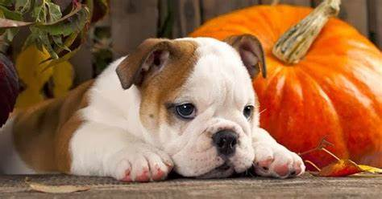

Sobre a MyPet
Atuamos no município de Osasco desde 1910, exercendo pioneirismo na medicina veterinária, numa época em que nossa cidade era extremamente carente nessa modalidade de serviço.

Hoje, mais do que nunca, dedicamos o atendimento aos animais de compainha, procurando a interação entre a família e o amigo-pet, vislumbrando a sanidade, a prevenção e a harmonia comportamental.
Somos uma clínica veterinária aberta 24 horas. Nossa equipe é composta por médicos veterinários especialistas em diversas áreas e tipos de animais como cães e gatos. Temos todo o preparo para cuidar do seu animal com muito amor através de exames clínicos e aboratoriais, cirurgias, consultas preventivas, internações, vacinação e atendimento de emergência.